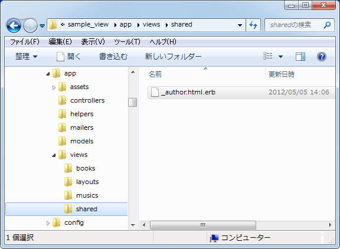
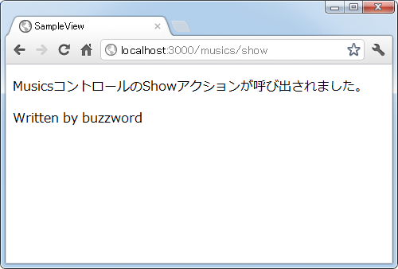

部分テンプレート
レイアウトテンプレートを使うことでページのヘッダやフッタ部分を共通化することができましたが、サイドバーやメニューなどメインコンテンツの中にも複数のテンプレートで共通して利用したい部分がある場合があります。このような場合は部分テンプレートと呼ばれるものを使用します。ここでは部分テンプレートの使い方について解説します。
1.部分テンプレートのファイル名と保存場所
2.部分テンプレートの埋め込み
3.動作確認
部分テンプレートのファイル名と保存場所
部分テンプレートは複数のページ内で共通して記述されるものであれば特に何でも構いません。著者情報の部分であるとか、サイドバー全体を部分テンプレートにしても結構です。
例えば「app/views/books/show.html.erb」ファイルと「app/views/musics/show.html.erb」ファイルという二つのテンプレートが用意されていたとします。
<p> BooksコントロールのShowアクションが呼び出されました。 </p> <p> Written by buzzword </p>
<p> MusicsコントロールのShowアクションが呼び出されました。 </p> <p> Written by buzzword </p>
「Written by buzzword」の部分は多くのテンプレートで共通して記述される部分なので、今回この箇所を部分テンプレートとして作成してみます。部分テンプレートといっても特別なものではないので、他のテンプレートと同様の記述方法で作成します。今回は次のようになりました。
<p> Written by buzzword </p>
テンプレートのファイル名は自由に設定して構いませんが、ファイル名の先頭は必ずアンダーバー「_」を付ける必要があります。今回は「_author.html.erb」としました。テンプレートファイルの保存場所は「app/views/」以下であればどこでも構いません。同じコントロール内のテンプレートからのみ使用されるのであれば「app/views/コントロール名/」ディレクトリに配置し、複数のコントロールで使用されるテンプレートから共通して使用されるのであれば「app/views/shared/」ディレクトリを作成してその中に設置する場合が多いようです。
今回は「app/views/shared/_author.html.erb」として部分テンプレートを保存しました。

部分テンプレートの埋め込み
次に作成した部分テンプレートをテンプレートに埋め込みます。部分テンプレートを埋め込むには、テンプレート内の埋め込みたい場所にrenderメソッドを使って次のように記述します。
<%= render 'ディレクトリ名/部分テンプレート名' %>
この時部分テンプレート名は先頭のアンダーバー(_)を除いた名前を指定して下さい。部分テンプレートのファイル名が「app/views/shared/_author.html.erb」であれば次のように記述します。
<%= render 'shared/author' %>
では「app/views/books/show.html.erb」ファイルと「app/views/musics/show.html.erb」ファイルという二つのテンプレートに対して次のように部分テンプレートを埋め込みました。
<p> BooksコントロールのShowアクションが呼び出されました。 </p> <%= render 'shared/author' %>
<p> MusicsコントロールのShowアクションが呼び出されました。 </p> <%= render 'shared/author' %>
このテンプレート呼び出されると、自動的に別途用意した部分テンプレートが埋め込まれた上で使用されます。
動作確認
では実際に試してみます。「books」コントローラと「musics」コントローラでそれぞれ「show」アクションが作成しました。
class BooksController < ApplicationController def show end end
class MusicsController < ApplicationController def show end end
各アクションから呼び出されるテンプレート及び、テンプレートに埋め込まれた部分テンプレートは先程作成したものをそのまま使います。
ルーティングの設定として「config/routes.rb」ファイルを次のように記述しました。
SampleView::Application.routes.draw do get "books/show" get "musics/show" end
ではアプリケーションを起動し、まずは「books」コントロールの「show」アクションを呼び出してみます。すると次のように結果がブラウザに表示されました。
テンプレートの中に部分テンプレートが埋め込まれた状態で表示がされています。
続いて「musics」コントロールの「show」アクションを呼び出してみます。すると次のように結果がブラウザに表示されました。

先程と同じくテンプレートの中に埋め込んだ部分テンプレートも含めて表示がされています。
それでは表示されたWebページのソース(bodyタグの中だけ)を確認してみます。
<body> <p> MusicsコントロールのShowアクションが呼び出されました。 </p> <p> Written by buzzword </p> </body>
このように部分テンプレートを埋め込む為にrenderメソッドを記述した箇所が、部分テンプレートファイルの中に記述したものに置き換わっていることが分かります。
今回はテンプレートの中に部分テンプレートを埋め込みましたが、レイアウトテンプレートの中や別の部分テンプレートの中に部分テンプレートを埋め込むことも可能です。
( Written by Tatsuo Ikura )

著者 / TATSUO IKURA
初心者～中級者の方を対象としたプログラミング方法や開発環境の構築の解説を行うサイトの運営を行っています。